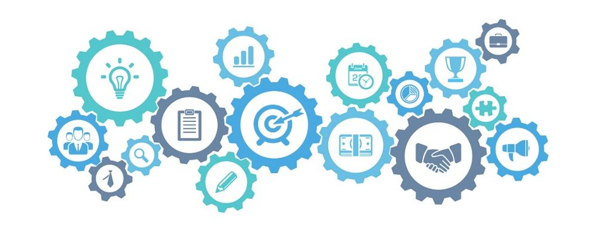
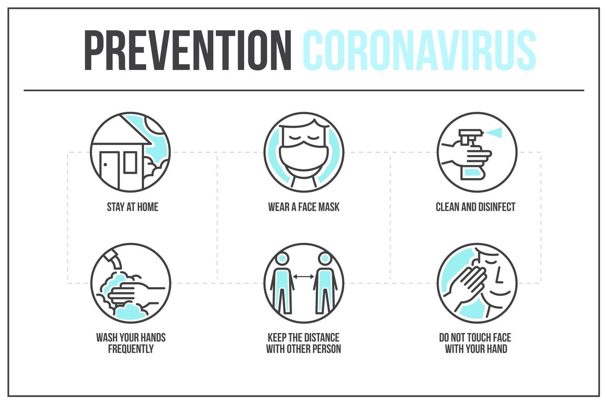
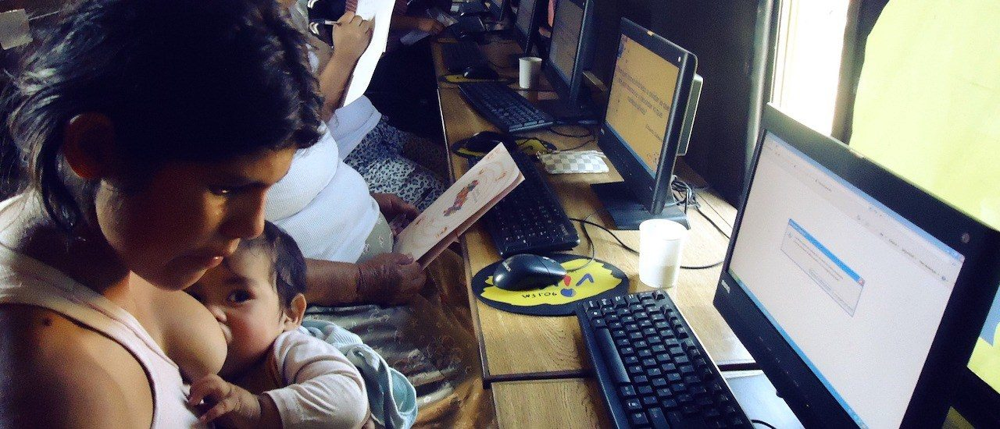
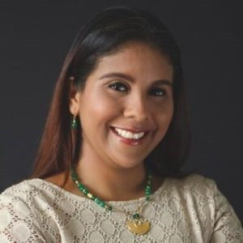
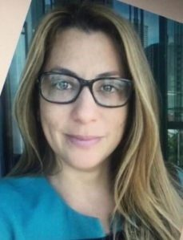
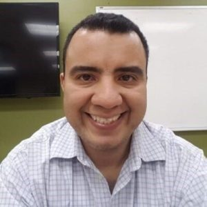

21Miércoles · Abril
Día Internacional de Mujeres en las TIC
Acompáñanos en esta conversación sobre innovación, el rol de las mujeres y el anuncio de los ganadores del #FondoInnovacionCiberseguridad.
Inscripciones
https://bit.ly/2RBZxbRBoletín oficial de ISOC Panamá
Edición #3Abril 2021
Una edición dedicada a las niñas y mujeres en las TIC.
Nodo 02 Índice
Nodo 03 Perfiles · Conociendo a los miembros
«No te ahogas al caer a un río, sino al mantenerte sumergido en él.»
Frase favorita · Paulo Coelho
Siempre tuve el interés de unirme a una comunidad en la cual se trataran temas referentes a mi carrera y pudiera aportar mis conocimientos para ayudar a otros. A través de colegas y conocidos, escuché sobre ISOC, quien permite colaborar e interactuar para construir una internet para todos. Y es así que fui involucrándome y colaborando en el capítulo de Panamá y hace dos años comencé a liderar el plan piloto para crear una Red Comunitaria en Panamá, cuya principal meta es ayudar a las comunidades a beneficiarse de las oportunidades que pueden ofrecerse a través del Internet.
Aprovecho la oportunidad para invitar a los miembros a participar en las diferentes iniciativas del Capítulo.
Los invito a todos a participar con nosotros. ¡Súmate!
Nodo 04 Entrevistas
Como parte del Día Internacional de la Mujer, que se celebró el 8 de marzo, y del Día de las Niñas y las Mujeres en las TIC, que se celebrará el 22 de abril, compartimos los perfiles de tres compañeras de nuestro Capítulo. Sus historias inspiran a niñas y jóvenes a seguir carreras en Ciencias, Tecnologías, Ingenierías y Matemáticas (STEM) y a entender el valor que aportan para que la brecha de género en las carreras profesionales sea cada día más chica.

Ingeniería en Electrónica y Telecomunicaciones
Instagram @elyizqdo
Desde los 15 años supe que quería ser ingeniera; en ese entonces no estaba 100 % segura en qué rama. Todo inició en una visita al puente de mando de una embarcación. Me llamó mucho la atención que la única mujer ahí era una ingeniera naval encargada de las comunicaciones del barco. Era increíble ver su seguridad y confianza con el tablero de control y el respeto que le tenían sus compañeros de trabajo, todo esto sin perder su feminidad. Entonces me dije: wow, qué súper mujer, ¡yo quiero ser así cuando sea grande!
En mi último año de secundaria, en 2003, tuve la oportunidad de conocer de la mano de una ingeniera de telecomunicaciones lo bonito de la carrera y las oportunidades que venían con la apertura del mercado. Esto me dio el último empujón que necesitaba para decidirme.
Hay muchos retos. Por ejemplo, muchas horas de estudio. Nunca dejas de estudiar, aun siendo profesional. Precisamente esas horas de dedicación al estudio y al trabajo me han ayudado a crear un vínculo bonito con mis compañeros de universidad y con muchos colegas del gremio.
Entre las no tan positivas están los sesgos de género que aún existen. Esto nos obliga, en ciertas situaciones, a esforzarnos más por demostrar lo que vales como profesional. Puede ser desalentador, pero está en nosotras desafiar este prejuicio para que sea eliminado.
He tenido la dicha de que mi trabajo y mis estudios me han permitido conocer muchos lugares del país, viajar e incluso vivir en varios países, conociendo gente maravillosa. Pero lo que más me enorgullece es que, cuando finalizas un proyecto complicado, recibes un agradecimiento de los usuarios beneficiados. Para nosotros es un trabajo. Para ellos es una herramienta para conectarse digitalmente a un nuevo mundo lleno de oportunidades para su desarrollo personal y profesional.
No desalentarse y recordar que todas las cosas buenas van acompañadas de retos. Si hay pasión por lo que haces y los objetivos son claros, podrás superar todos los obstáculos.
Desde temprana edad, en el hogar, se debe potenciar a las niñas que muestran indicios de querer ir tras carreras técnicas; no se les deben truncar los sueños. Hoy en día hay muchas iniciativas para que las chicas aprendan, mejoren sus habilidades e incrementen su seguridad.
También es importante que las niñas tengan un modelo a seguir. Que conozcan referentes femeninos de liderazgo dentro de las STEM que les sirvan de inspiración para ir tras sus objetivos.

En realidad, no tuve una motivación externa a mí misma al momento de escoger la carrera. Era algo que me llamaba la atención desde la escuela secundaria: poder descubrir cosas nuevas. Luego de investigar y analizar las carreras dentro de las TIC, vi que era un ámbito que iba a ser necesario en cualquier industria, y es lo que se está viendo en la actualidad, ya que ahora todos estamos interconectados.
Uno de los retos es romper estereotipos. Considero que los retos se los impone uno mismo en esta área, ya que con esfuerzo y dedicación las mujeres hemos logrado demostrar nuestras capacidades en áreas técnicas que normalmente son ocupadas por hombres. Como experiencia positiva, ver que en un área técnica el 75 % éramos mujeres dejó en evidencia que no hay diferencia por ser mujer. La no tan positiva es sentir que piensen que no eres capaz por ser mujer.
Hasta el momento, lo que más me enorgullece es ver cómo los conocimientos en el ámbito de las TIC son necesarios y valorados en áreas como Continuidad del Negocio, y haber aprendido a enlazar lo técnico con lo estratégico y a transmitir a los demás lo que he logrado aprender.
¡Que persigan sus sueños, que todos son alcanzables si así te lo propones! Que descubran qué es lo que más les gusta en esta área, que es muy amplia. El talento femenino es muy positivo, muy brillante y tenemos mucho que aportar. Por eso precisamos cambiar las estadísticas apoyándonos entre nosotras.
Tenemos que animar, impulsar, normalizar y ofrecer referentes a las niñas y mujeres, para dar visibilidad a las mujeres que han alcanzado el éxito en esas profesiones y que puedan tener esos modelos de inspiración. Así mismo, hay que dar a conocer las diferentes alternativas profesionales que tienen en este ámbito, ya que muchas veces ni siquiera las conocen, y en la actualidad hay muchas oportunidades donde se necesita la autenticidad y las características únicas que tenemos las mujeres.

La decisión de estudiar esta carrera la tomé desde los 12 años. Desde niña me llamaban la atención los videojuegos y las películas de tecnología y hackers. Recuerdo que en mi primer año de secundaria un profesor me preguntó qué estudiaría en la universidad y mi respuesta fue «sistemas». Al llegar el momento, así fue. Al terminar la carrera estaba muy feliz porque había tomado la decisión correcta: es una carrera que está al servicio de otras especialidades y de la sociedad.
Las mujeres en el sector de las TIC se enfrentan a barreras y factores que les impiden ocupar posiciones de liderazgo: el estereotipo del papel de la mujer en la sociedad, la falta de confianza en sí misma, la falta de habilidad para negociar, un ambiente fuertemente dominado por el género masculino y, muchas veces, la falta de apoyo para mantener un equilibrio entre la vida personal y la profesional.
Como experiencia positiva me gustaría resaltar ser parte de WoSec, un espacio para mujeres que apoya a las mujeres y una valiosa herramienta para fortalecer el género en las TIC. También destaco el apoyo y la guía que he recibido de mujeres y hombres en el desarrollo de mi vida profesional.
En mis estudios, el logro que más me enorgullece es la tesis que desarrollé sobre buenas prácticas para el diseño e implementación de aplicaciones de salud.
Ser una mujer líder en el área de las TIC no es fácil, pero tampoco es un reto imposible. Debemos prepararnos, creer en nosotras, apoyarnos, tener pasión y valentía para enfrentar todos los desafíos.
Debemos disminuir la brecha de género en el sector con actividades y formaciones dirigidas a niñas y adolescentes de los centros educativos, y crear proyectos de emprendimiento digital para niñas. Así buscamos vencer los prejuicios de género asociados a las tecnologías y les brindamos referentes femeninos que promuevan el interés por las TIC y STEM.
Nodo 05 Agenda
Como parte de su retroalimentación sobre las necesidades de capacitación en la gestión de Capítulos, se ha hecho un esfuerzo en todas las regiones para ofrecer una capacitación global con los temas clave para el éxito de un Capítulo. Los módulos son «self paced», es decir, cada persona avanza a su ritmo.
Resumen del programa: video en YouTube. Más detalles en Chapter Management Essentials.

Acompáñanos en esta conversación sobre innovación, el rol de las mujeres y el anuncio de los ganadores del #FondoInnovacionCiberseguridad.
Inscripciones
https://bit.ly/2RBZxbRConoce cómo potenciar el desarrollo de las niñas en las TIC y qué esfuerzos debemos hacer para derribar los sesgos de género que aún existen en las carreras técnicas.
Registro
Registro en ZoomEs el estado en que todos los nombres de dominio y direcciones de e-mail válidos son aceptados, validados, almacenados, procesados y exhibidos de manera correcta y consistente por todas las aplicaciones, dispositivos y sistemas que utilizan internet.
Matrícula
Matricularse en ICANNNodo 06 Artículo principal
El término «digitalización» nos transporta por sí solo a pensar en computadoras, procesadores y escáneres, entre otros. Se puede definir la digitalización como la conversión de documentos, textos, imágenes y/o sonidos de un formato análogo (original o natural) a un formato que pueda ser reconocido por los microprocesadores o, en un lenguaje sencillo, por las computadoras, es decir, a un formato digital.
Hoy día es común escuchar a las organizaciones, en general, implementar procesos de digitalización con fines diversos: mejorar y facilitar nuevas formas de acceso a los documentos; disminuir el papel como una medida de preservar el ambiente; o la que se considera más sustentable para un proyecto de esta magnitud, mitigar el deterioro de los documentos en su estado original al disminuir su manipulación. Todas estas motivaciones son válidas, pero la duda que surge es… ¿se están tomando en cuenta las medidas que permitan acceder a estos objetos digitales a través del tiempo? ¿Es decir, a mediano y a largo plazo? ¿Se están llevando a cabo estrategias que mitiguen la obsolescencia tecnológica? ¿O simplemente estamos pensando en resolver un problema a cortísimo plazo?
Uno de los aspectos primordiales de la protección de la información es garantizar la disponibilidad de los datos.
Esto quiere decir que si dentro de 20 años o más algún usuario desea ver esa información, pueda acceder a ella sin problema. Para garantizarlo se han elaborado estándares internacionales que minimizan el riesgo de perder información a futuro. Estas normas, de manera integral, se conocen como preservación digital.
Se sabe que existen otros aspectos de la protección de los datos que se deben cuidar desde el momento en que colocamos información en una red de computadoras, ya sea local o, como se hace comúnmente hoy día, permitiendo el acceso a nuestros documentos digitales a través de Internet. Pero la principal preocupación es un aspecto que, a pesar de su importancia, se escucha muy poco, quizás porque no se tiene claro las consecuencias que trae el no considerarlo: la «preservación digital».
La preservación digital es un concepto que surge de la preocupación de mantener, aun con el paso del tiempo, la visualización y el acceso a los objetos digitales, sobre todo cuando estos tienen un valor histórico y su original en papel está en franco deterioro. Los principales enemigos de las imágenes digitales son la rápida obsolescencia de los equipos y de los programas informáticos que les permiten existir. La preservación digital a largo plazo tiene la misión de mantener con vida esos objetos digitales, generando objetos auténticos y estables que aseguren la calidad aun con procedimientos de conversión de formato y migración de medios de almacenamiento, cuando así sean requeridos.
Estas regulaciones internacionales van desde aspectos básicos a considerar al momento de escanear el documento, hasta los medios de almacenamiento, el ambiente de conservación para el almacenamiento físico y la manipulación de la imagen.
Es imperativo que, si se decide digitalizar información importante, se hagan las adecuaciones pertinentes, no sea que estemos invirtiendo una gran cantidad de recursos en una actividad que durará solo unos cuantos años.
Nodo 07 Salud
Ahora que las autoridades nacionales de salud han rebajado las medidas de restricción en todo el país, es importante recordar que el virus del COVID-19 sigue en la calle. Sigamos con las medidas de prevención y bioseguridad.
0 de 6 medidas marcadas

Nodo 08 Opinión

Este artículo refleja los argumentos de un documento informativo conjunto publicado por la Sociedad de Internet y la Asociación para el Progreso de las Comunicaciones (APC) antes de la cumbre del grupo de mujeres del G20 (W20), celebrada en Argentina del 1 al 3 de octubre de 2018.
En nuestra era digital, aprender a utilizar internet ha sido esencial, si no sinónimo, para la empleabilidad en muchos campos. Las tecnologías de la información y la comunicación (TIC) impulsan el crecimiento empresarial y el desarrollo económico de los países. Abren nuevos canales para comunicarse a través de grandes distancias, organizar a las personas, sensibilizar y estimular el activismo.
Pero dicha promesa puede profundizar las desigualdades existentes en el mundo físico si no todos pueden acceder y disfrutar de estas tecnologías.
Actualmente, las mujeres y las niñas se están quedando atrás en el desarrollo digital. Mientras que en los países con ingresos bajos y medios la brecha entre el uso de las mujeres y los hombres es del 26 %, en los países menos desarrollados (PMD) las mujeres utilizan internet un 33 % menos que los hombres.
En algunos casos, las mujeres simplemente no tienen acceso a internet o es demasiado caro. En otros, tienen acceso limitado con servicios de prepago. Además, hay factores culturales que impiden que las mujeres utilicen internet o que incluso tengan un ordenador o teléfono móvil, lo que indica problemas más profundos. En general, las mujeres disponen de menos tiempo de ocio que los hombres, teniendo en cuenta que generalmente asumen una parte mayor de las tareas del hogar y el cuidado de los niños. Además, tienen menos oportunidades que los hombres para conseguir trabajos y ocupar puestos en los que se pueda acceder a internet y obtener conocimientos informáticos. Muchas también afirman que el contenido de internet no es relevante para sus vidas. Otras temen invasiones o abusos de la privacidad en línea. Como resultado, necesitamos más mujeres creadoras de contenidos y espacios en línea más seguros.
El acceso a internet solo es completamente significativo cuando las mujeres tienen los conocimientos o capacidades para usarlo.
Asimismo, debemos recordar que el acceso a internet solo es completamente significativo cuando las mujeres tienen los conocimientos o capacidades para usarlo y mejorar sus vidas o las de sus familiares y comunidades. Como las economías son cada vez más digitales y están más interconectadas, es crucial la participación de las mujeres en campos como la ciencia, la tecnología, la ingeniería y las matemáticas (STEM). No obstante, por desgracia, no siguen el mismo ritmo.
Necesitamos medidas efectivas, tangibles y cuantificables para acabar con la brecha de género digital en el acceso a internet. Hay que abordar los obstáculos que se oponen a su uso para garantizar que las mujeres y las niñas puedan beneficiarse verdaderamente de la inclusión digital.
Sabemos que la desventaja digital refleja mayores desigualdades estructurales, económicas y culturales. Por tanto, las políticas solo pueden ser de naturaleza digital. Las medidas para reducir la brecha digital deben basarse en los derechos humanos, incluido el derecho de la mujer a participar y contribuir al desarrollo social, económico y cultural. Deben considerar la libertad de la mujer para tomar sus propias decisiones e incluir a mujeres de todos los grupos y condiciones sociales para dar forma a estas políticas y tecnologías que afectan a sus vidas.
No hay una solución apropiada para todos los casos. Existen enormes variaciones nacionales, tanto en igualdad de género como en desarrollo digital. Para que resulten efectivos, los cambios deben ser específicos desde el punto de vista cultural. Si deseamos superar las desventajas digitales y promover el desarrollo digital, los gobiernos, las empresas y otras partes implicadas deben prestar atención a los diferentes contextos al desarrollar las políticas, los programas y los planes de negocio.
Las medidas de desarrollo digital deben integrarse con políticas para combatir la desigualdad de género.
En agosto de 2018, el G20 se comprometió a «prestar especial atención» a la brecha digital de género y formuló nueve recomendaciones en relación con la Declaración Ministerial de Economía Digital, adoptada en Salta (Argentina).
Sin estas acciones, las diferencias en el acceso y uso de internet aumentarán la brecha, tanto en información como en poder, entre las mujeres y los hombres en lugar de reducirla, lo que resultaría perjudicial para todos.
Fuente: Internet Society, blog, octubre de 2018

Nodo 09 Institucional
El pasado 18 de febrero de 2021 se celebró la Asamblea General de Miembros, que en esta ocasión se realizó de forma virtual por las restricciones de movilidad causadas por la pandemia de COVID-19. En esta Asamblea culminó el proceso de elecciones de la nueva Junta Directiva del Capítulo de Panamá de la Sociedad Internet (ISOC Panamá) para el período 2021-2023.
El proceso inició a finales de 2020 con la conformación del comité de nominaciones, integrado por Edna Samudio de Jaén, Glenda Magallón y Efraín Vargas, encargados de garantizar la transparencia del proceso y anunciar a los ganadores. Continuó con el llamado a los interesados a formar parte de las autoridades del capítulo, conforme lo establecen los estatutos de la organización, y luego con la invitación a los miembros con voz y voto para ejercer su derecho a elegir y ser elegidos.
En la Asamblea, la secretaria Nayreth González presentó, por parte de la Junta Directiva, el informe anual de gestión y resultados. Se destacaron varias iniciativas realizadas gracias al esfuerzo de los Comités de Redes Comunitarias, Educación, Membresía y Comunicaciones, liderados por Zueline Aguilar, Noralí Duín, Kelkyra Fragueiro y Pablo Ruidiaz, respectivamente. Se destacó en especial el segundo lugar global en el Chapterthon 2020 de Internet Society, por el proyecto de manual de programación de dispositivos para la creación de redes inalámbricas en el sitio basado en Raspberry Pi, liderado por Sascha Ram. Finalmente, la tesorera, Querube Urriola, presentó el informe financiero anual y el presupuesto de 2021 para su aprobación.
El punto culminante de la Asamblea fue el anuncio de las autoridades electas por parte del presidente encargado, Pablo Ruidiaz M., ratificado por Edna Samudio de Jaén por el Comité de Nominaciones. Estas son las nuevas autoridades que liderarán a ISOC Panamá por los próximos dos años:
Directiva




Vocales



Al 25 de febrero no se presentaron apelaciones ni impugnaciones en el proceso de elecciones. Las nuevas autoridades tomarán posesión de sus cargos el 18 de marzo de 2021, tercer jueves de marzo, según lo establece la carta máxima de la organización.
Fuente: isoc.org.pa
Miembros nuevos
| Nombre | Fecha de ingreso |
|---|---|
| Leydis Peña | 1 de abril de 2021 |
| Franklin Ward | 6 de febrero de 2021 |
| Jorge Romero | 4 de febrero de 2021 |
| Miguel Arosemena | 15 de abril de 2021 |
Nodo 10 Editorial
En el año 2010, la Unión Internacional de las Telecomunicaciones (UIT), organismo adscrito a la Organización de las Naciones Unidas (ONU), propuso el cuarto jueves del mes de abril como el día en que debemos impulsar la educación en TIC de las niñas y jovencitas, así como recordar la enorme brecha digital de género que se ha hecho evidente año tras año.
En el mundo digitalizado que vivimos, la participación de las jóvenes en el ámbito estudiantil de las ciencias y las tecnologías es variable. En algunas ocasiones aumenta, pero lamentablemente hay años en que disminuye.
Este ejemplar lo dedicamos al esfuerzo que hacemos como organización para reducir la brecha de género.
Para que todas las niñas, jóvenes y mujeres, de todos los estratos sociales y de las diversas comunidades, puedan acceder y disfrutar de las diversas tecnologías de la mano del internet.

© 2021 En la Red, boletín interno editado trimestralmente por ISOC Panamá. Edición #3, abril de 2021.